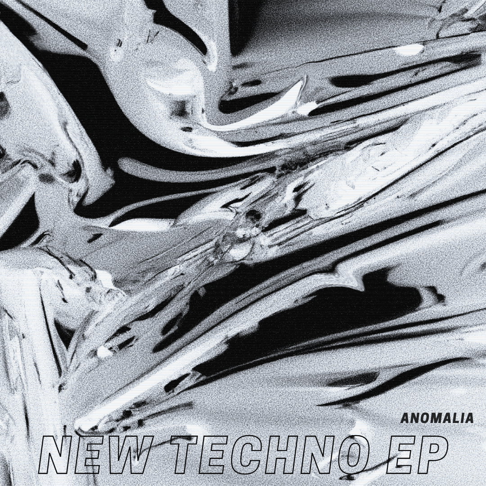
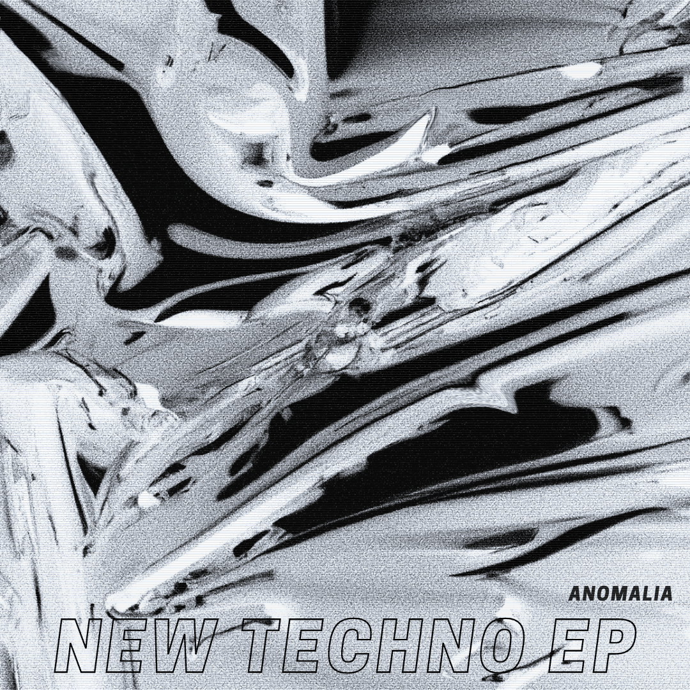

Smngrrh voit le jour à Lyon le 18 avril 1997. Il grandit dans une famille où l’art et la culture sont plus qu’une passion, elles sont une évidence. Très tôt il se retrouve plongé dans des univers musicaux multiples explorant les trésors de la bibliothèque de son père, ressentant la sensibilité de sa mère et partageant la curiosité de ses frères et sœurs. C’est là que naît son oreille attentive.
Autodidacte, il apprend à danser et à jouer du piano pendant sa courte scolarité, développant une technique intuitive, forgée par le plaisir et la discipline personnelle. La technique vient de l’expérimentation, de l’erreur, du plaisir de créer sans limite. Fier de ses convictions et de son savoir-faire : il défend une musique à la fois large et libre, sans compromis.
L’histoire débute dans cette bulle : une rupture vécue par l’un, les perspectives futures de l’autre. De cette rencontre naît Fusion, un album issu de leurs erreurs, de leurs croyances, de leurs contradictions. Inspiré directement par la vie, le projet devient un refuge, une bulle artistique où chaque son reflète un instant. Sans référence précise, ils décident de créer leur propre label : Human Mistake Records.
L’album est résolument ambient et expérimental, composé dans le pur feeling. Il n’y a pas de ligne directrice, juste une semaine de travail guidée par l’instinct et l’émotion. L’album peint un futur sombre et un passé figé, mais toujours avec lucidité. Le dernier morceau est doux et mélancolique, enfantin presque, et laisse passer un éclat d’espoir. Les attentes suspendues, le souffle retenu… jusqu’au relâchement. Et ce souffle se retrouvera pleinement dans le projet suivant : Second Breath.
(HMR rec comptera neuf releases, accueillant des artistes des quatre coins du monde. Le label renaîtra plus tard grâce au projet Blossom.)
Au départ, le morceau s’appelle Anomalia. C’est un pont entre Fusion et Second Breath, une référence à MGS2. Puis le morceau change de visage. Il devient Call Two Point Five. Anomalia devient le premier pseudo. Le numéro à composer pour débloquer la suite de l’histoire est donc Two Point Five. Chaque note devient un code. Chaque son, une clé. L’auditeur est invité à franchir le miroir de l’histoire.
Après avoir appelé le ''Two Point Five'', un souffle nouveau envahit Ano. Second Breath est un album techno/électronique intense, teinté de house UK, de dub, d’acid. Chaque morceau monte en puissance, commence chargé et finit saturé. C’est la philosophie du second souffle : quand on croit avoir tout donné, une force nouvelle surgit, intacte et fraîche, prête à continuer le voyage.
“L’album a été composé uniquement au casque, sur un ordinateur qui ramait, avec le strict minimum offert par FL Studio. Pas de VST, pas de suite de mixage. C’était brut.”
“Un peu paniqué, j’ai cru que tout avait disparu. Mais dans mes disques durs, clés USB, liens WeTransfer, démos SoundCloud… j’ai récupéré morceau par morceau. Au final : 25 tracks. J’avais l’album.”
Le confinement change tout. Nouveau studio. Nouveau matériel. Quelques années après Second Breath, Ano compose A.N.O, un album intime. Le nom est simple : les trois premières lettres du projet. Les dernières, M.A.L.I.A resteront pour plus tard — peut-être dans dix ans comme un retour aux sources. L’album explore un spectre large : DnB, ambient, house, techno, industriel, breaks. Mais un crash informatique efface tout le travail.
A.N.O se lit comme une partie de jeu vidéo : on commence sur un champ de bataille, on progresse, on s’arrête, on invite un ami. L’aventure se poursuit à deux. On approche de la fin, puis on retombe jusqu’à mourir au niveau 8. Il faut utiliser x2 To Be Continued pour continuer. Et ce sont les Two Human Mistakes qui viendront clore l’histoire.
Cet album représente un lâcher-prise total, l’acceptation des défauts, un pas décisif vers l’évolution.
Switch Beat condense l’esprit de A.N.O en seulement deux morceaux. Même histoire, mais racontée autrement. Changements radicaux, transitions soudaines, univers parallèles. La démarche : ouvrir les genres de l’intérieur même des tracks. Les switchs deviennent des portails inattendus, surprenants, qui transportent ailleurs.

Nouvelle approche : structurer, séparer, clarifier les idées. Les titres sont simples. L’objectif : interpréter une dernière fois la house et à la techno, styles fondateurs de son parcours, mais revisités à sa manière. Les switchs sont remplacés par des transitions longues. Last track : The End of the Persona History & Never Stop.
 

- New Same Fight EP
- Commencement de Lyon Capital (nom de code)
- Reprise de HMR Rec + Blossom
- 3 sets ambient pour anticiper la fin d’Anomalia (L’Enfance / L’Amour / La Mort)
- Un live de 2h : fusion de tous les albums et EP (big captation soon)
- Fin du projet & évolution du pseudo
“Nouveau style, nouvelle école, nouvelle époque, nouveau deal…” – B2OBA, inédit (Temps Mort)